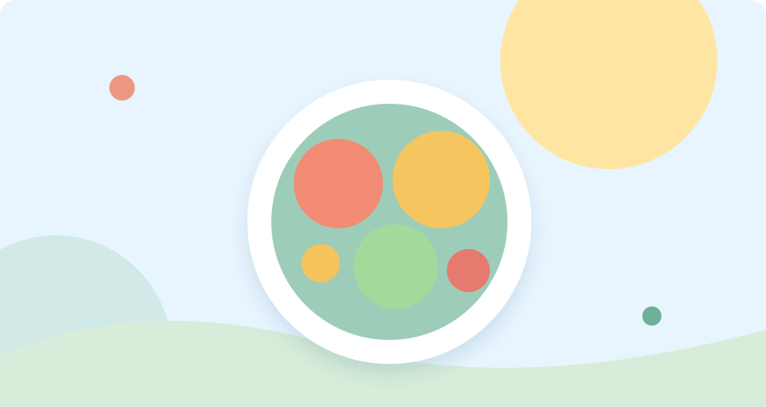

AEC e CAF
Acompanhamento e partilha de informação sobre atividades de enriquecimento curricular e apoio à família.
Informação prática, apoio à família e iniciativas de proximidade.
Acompanhamento e partilha de informação sobre atividades de enriquecimento curricular e apoio à família.

Guias e recursos para famílias que chegam à nossa comunidade escolar.
Projetos de entreajuda e banco solidário de materiais escolares.

Biblioteca, desporto, iniciativas ambientais e participação familiar.
Propostas de colaboração e benefícios com o comércio do bairro.

Acompanhamento das questões ligadas à alimentação e à qualidade do quotidiano escolar.
Para informação histórica sobre CAF, AEC, biblioteca e atividades extracurriculares, consulte também o arquivo da Associação ↗.
O antigo site reúne informação sobre AEC, AAAF/CAF, biblioteca, transportes, refeitório e outras atividades. Estes dados são históricos e os horários e inscrições devem ser confirmados com as entidades responsáveis no ano atual.